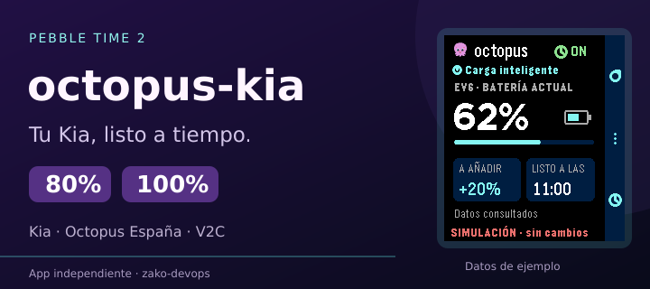
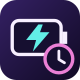

BORRADOR LOCAL · SIN PUBLICAR

octopus-kia
zako-devops · Remotes · Pebble Time 2

Disclaimer (English)
This app is available in Spanish only because it is designed exclusively for Octopus Energy Spain. It does not work with Octopus Energy accounts or services in other countries or regions.
Consulta la batería de tu Kia y prepara su próxima carga inteligente desde tu Pebble Time 2.
• Consulta el último porcentaje de batería comunicado por el coche.
• Ve el porcentaje adicional elegido en Octopus y la hora para tener el coche listo.
• Elige llegar al 80% o al 100%: la app calcula cuánto necesitas añadir.
• Revisa la configuración y confirma con Sí o No antes de enviarla.
• Consulta las ventanas de carga y los estados del cargador V2C.
• Recibe un aviso si el límite de carga AC del coche impide alcanzar el objetivo.
Requiere un Kia compatible con la API personal de Pleos, una cuenta de Octopus Energy España con un V2C Trydan vinculado y la app Pebble en Android. Las credenciales se configuran en el teléfono. No se incluyen cuentas ni credenciales en la app.
Octopus decide cuándo cargar según el porcentaje adicional y la hora seleccionados. Los datos del coche pueden corresponder a su última conexión; la app muestra la fecha recibida. No modifica el límite AC del vehículo.
Interfaz en español. Capturas con datos de ejemplo.
Proyecto independiente de zako-devops, sin afiliación oficial con Octopus Energy, Kia o V2C.
Forzar carga ahora: inicia la carga inmediata tras confirmar Sí/No y comprobar que el coche está conectado. Respeta el límite del coche y conserva las preferencias de carga inteligente.
Detener carga: durante una carga forzada, cancélala con confirmación Sí/No y vuelve al plan inteligente sin modificar tus preferencias.
Capturas
Datos ilustrativos, marcados como simulación. Son capturas nativas, sin marco de reloj.
Datos de la ficha · Preparación y publicación